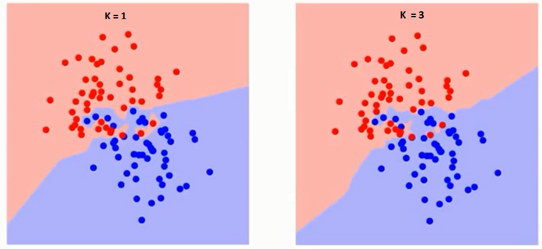

Clustering
Terms:
- unsupervised classification — techniques which do not take prior information about the clusters
- supervised classification — techniques which do
- CART — a suite of methods belonging to Classification And Regression Trees
R Functions:
- mclust{Mclust(data)} (Gaussian mixture model)
- rpart{rpart(y~x,method="class"), prune(fit)} (create and prune a classification tree)
- MASS{lda(y~x)}
- class{knn(train,test,train_classifications,k)}
Unsupervised Methods
Hierarchical Clustering
Agglomerative clustering refers to initially assigning each point to its own cluster, then iteratively merging the two clusters which are closest together until a single cluster remains. A cutoff is then decided to determine how many clusters there are, usually aided by looking at a dendrogram, which displays each merger and the distance at which they occur.
How we define the shortest distance between clusters can significantly affect the clusters determined. One common definition, especially in astronomy, is the friends-of-friends, or nearest-neighbor algorithm, which considers the nearest neighbor of a cluster, as the name suggests. This method can result in long chains, though, which might not be representative of the actual groups. Complete linkage uses the distance to the farthest point instead, resulting in more symmetrical and compact groups. A middle ground is average linkage, which uses the average distance.
Mixture Models
A way to determine whether a dataset is more consistent with white noise or has peaks is through parametirc mixture models. We want to find the means and variances of the k Gaussians which have the maximum likelihood of explaining the data. Algorithms in R have the ability to identify the parameters of the Gaussians as well as the optimal number of clusters.
Supervised Methods
Supervised classification relies on the existence of some training data on which an algorithm bases its classifications. The models can then be used to predict the classifications of new data.
Classification Trees
A very straightforward method for classification is through decision trees, which base classifications on absolute position in the variable space. The tree is grown by creating nodes which maximize the drop in misclassifications (or some other impurity measure). To prevent a number of branches equal to the number of points, we introduce pruning to the tree, which in general penalizes tree complexity. The package {rpart} in R does this with a metric called the relative error. Minimizing this value determines the optimal number of branches in the tree.
Trees do not necessarily have to make divisions along the data axes; trees which create diagonal splits as well are called oblique decision trees.
Linear Discriminant Analysis (LDA)
LDA is a PCA-like procedure that searches for the component axes which best split the training data into their correct categories. Just like with PCA, we can see the data as it is defined on the "principal component" axes to determine factors which contribute to variance in the data. LDA is easy to implement in R.

Nearest-Neighbor Classification
If two clusters are intermingled in a complicated (but deterministic) manner, it may be useful to use k-nearest neighbor (k-nn) classification. This method assigns test data to the same category that the k nearest neighbors of the training data are assigned to. This type of method is also called a memory-based classifier, since it relies on remembering the training data itself and not just where to make divisions.

Visualizing Misclassifications
Jitter plots are a good way of visualizing how a certain method misclassifies test data, and how misclassification might compare across methods.